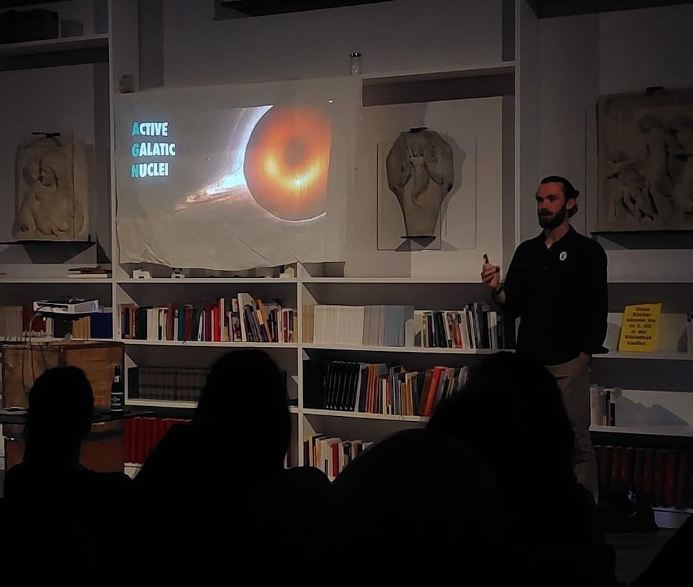
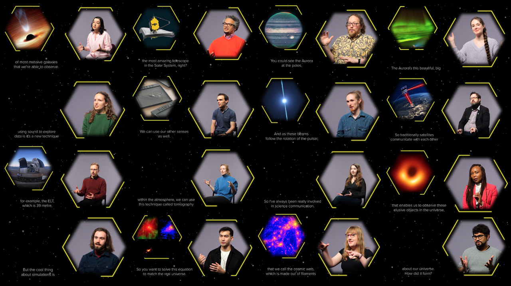
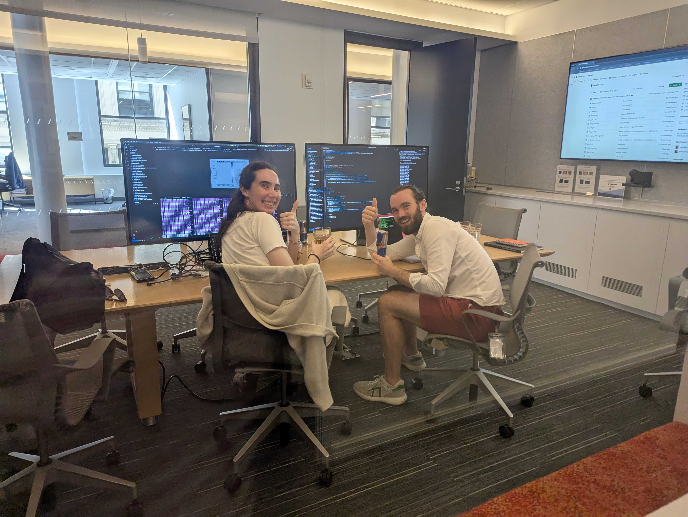

Outreach & Community
Public Engagement

Sharing my research at the Munich Pint of Science festival
A huge advantage we have as astronomers is that so many people — of all ages and from all walks of life — are interested in the universe and the work we do studying it. I enjoy sharing my work through public outreach talks, including at Pint of Science Munich (2023), Newcastle University's INSIGHTS public lecture series (2023), and the Royal Observatory Greenwich Think Space online lecture series (2025), where my talk An Extragalactic Murder Mystery: Do Black Holes Kill Galaxies? is available to watch.
I was part of the team behind Space Investigators North East, an exhibition at the Great North Museum: Hancock in Newcastle. I directed and edited a film of interviews with researchers from Newcastle, Northumbria, and Durham — situated within a life-size model of the JWST mirror — celebrating the breadth of astrophysical research in the North East and the diverse backgrounds of the scientists behind it.
As part of the Simons Foundation's Open Interval program, which fosters collaborations between scientists and artists, I have been paired with choreographer Jiemin Yang to explore the intersections between contemporary dance and my research into AGN feedback. This ongoing collaboration is developing new ways to communicate complex astrophysical ideas through movement.

A selection of stills from my film for the Space Investigators exhibition, featuring interviews with astronomers across the north east of England.
Teaching & Mentoring
I was lead supervisor for Emily Kerrison (University of Sydney) during her time on the CCA predoctoral program, where we designed and built the SANGRiA pipeline to connect her existing expertise in ASKAP-FLASH observations with cosmological simulations. Mentoring Emily through her first simulation-based project was one of the highlights of my fellowship so far.

An intense hack session of SANGRiA development (unofficially) sponsored by Red Bull.
I have given guest lectures at Borough of Manhattan Community College (BMCC) for their introductory astronomy course, and an online lecture at Meru University of Science and Technology, Kenya.
I supervised a middle school student on a work experience placement, designing a week-long program that went from calculating foam dart trajectories to programming a simple Solar System model in Python. You can find the notebooks on GitHub.
Community & Service
As part of the CCA's Baryon Cycle strategic focus, I chaired the Scientific Organising Committee for the AGN & Energy Flows workshop (February 2026). This brought together over 50 observers and theorists across a range of spatial scales to build a more unified picture of how energy from AGN impacts galaxies and their surroundings.
During my PhD at ESO I chaired the Student Representative Committee, advocating for student welfare during the cost-of-living crisis, organising mental health awareness events, and communicating student concerns to the Office for Science.

The conference photo from the AGN & Energy Flows workshop
Contact
Center for Computational Astrophysics
Flatiron Institute
162 Fifth Avenue
New York, NY 10010
Email: sward@flatironinstitute.org
Website: samuelrward.github.io
Publications: ADS listing
ORCiD: 0000-0001-5345-0900